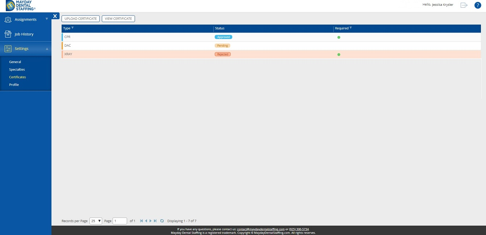
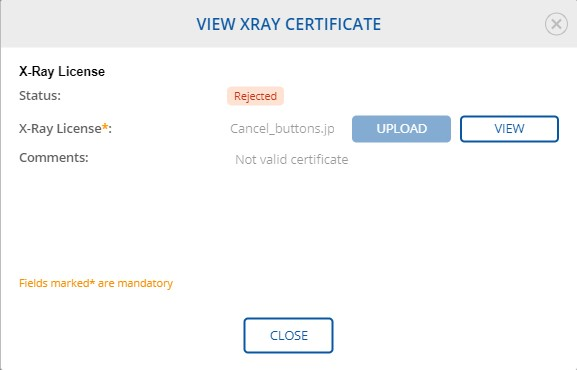

7. Settings
/
7.3 Certificates
Parent topic
:
7.3 Certificates
7.3.2 View Certificate
Navigate to
Certificates
at the
Settings
section at the left navigation panel.
Select a required certificate. For example, in
Rejected
status.

Click
VIEW CERTIFICATE
button.
Observe
VIEW CERTIFICATE
Dialog.
For examle, for XRAY Certificate:

Click
VIEW
button and observe a certificate.
Review
Comments
if they are available.
Note:
Some
Certificate Dialog
requires Expiration date.
Click
CLOSE
button.